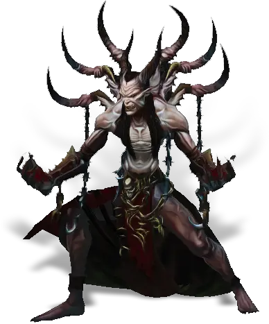

Открыть в интерактивной вики →

| Уровень | лёгк. 145 / норм. 145 / тяжел. 175 |
|---|---|
| Зоны атаки | ближняя, дальняя, ментальная |
| Шанс дропа 100% — уровни | лёгк. 1-120 / норм. 1-120 / тяжел. 1-140 |
| Шанс дропа 90% — уровни | 121-140 |
| Шанс дропа 70% — уровни | -- |
| Группа боссов | Тревога |
| Сила (PvE) | норм. 12 328 / тяжел. 16 595 |
| Аспект арены | Hegun |
| Здоровье | лёгк. 91 000 / норм. 91 000 / тяжел. 164 000 |
| Мана | 10 000 |
| Выносливость | 10 000 |
Локация
- Тюрьма Ангвальф-Хтаги
- Тюрьма Ангвальф-Хтага
Команда


Навыки


Дроп
 Глиф Подмастерья
Глиф Подмастерья 
 Путь тревоги
Путь тревоги 


 V-VIII
V-VIII  Гроссмейстерский глиф
Гроссмейстерский глиф  Даймонит 40
Даймонит 40 | Рары | Синергетики | Эпики | |||
 Рары Рары  Рары Рары  Рары Рары  Рары Рары | 70-90 ур. |  Эпики Эпики | |||
Прочее:  Путь тревоги Путь тревоги  Глиф Подмастерья Глиф Подмастерья | |||||
Требования для входа

Путь по картам
Умения
- Рвота — высасывание души
- Теневой Удар
- Очищение — теневая аура удар в живот отупление булавка в глаз явление смерти заражение отравление
Иммунитеты / особые умения
Устойчивость перед лицом смерти